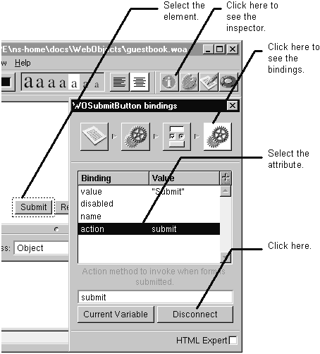

Table of Contents
Table of Contents
 Previous Section
Previous Section
Table of Contents
Previous Section
Select the element in the component window.
Click the element's bindings inspector icon. (Click the inspector button to bring up the inspector window.)
Select the attribute.
Click the Disconnect button.
Note: You can change an attribute's binding without having to disconnect.

 Next Section
Next Section